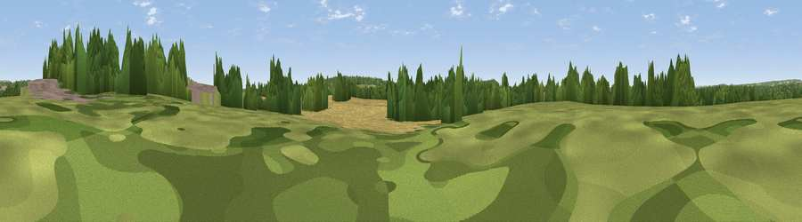

Viewpoint near North Baddesley
#39991 in England · top 68% of its area beats it · near North BaddesleyWhere it is
The exact computed spot (SU 39973 20729). Click the marker for map links.
The view, rendered

A 360° render of this exact spot computed from the terrain model, tree cover and land cover — summer colours, afternoon light, calibrated against photographs of famous viewpoints. Real trees, hedges and buildings will differ in detail.
The panorama
Grey silhouette: terrain skyline in each direction (720 bearings, Earth curvature and refraction included). Dashed green: skyline with trees (+15 m) and buildings (+8 m) as obstacles. Blue strip: how far the ground is visible on each bearing.
Where the view opens
Wedge length = distance to the farthest visible ground on that bearing (vegetation-aware). Rings at 10, 25 and 50 km.
What fills the view
35% woodland · 34% cropland · 24% grassland · 6% built-up
Angular shares of the visible panorama (visual magnitude), not map area. Landscape diversity 0.55 (0–1 Shannon).
Key numbers
More beautiful places nearby
The staircase of upgrades: each row has a higher view potential than everything closer. Driving times are estimates from straight-line distance, calibrated against real road routing — check an actual route before setting out.
| Place | Direction | Drive | Score |
|---|---|---|---|
| Viewpoint near Chilworth | SSE · 2 km | ~6 min | 40.3 |
| Viewpoint near Upton | SW · 3 km | ~7 min | 46.3 |
| Violet Hill | NNE · 7 km | ~14 min | 55.7 |
| Viewpoint near Sparsholt | N · 8 km | ~17 min | 66.9 |
| Beacon Hill | E · 20 km | ~34 min | 71.7 |
| Viewpoint near Meonstoke | E · 24 km | ~39 min | 74.8 |
| Viewpoint near Southwick | ESE · 28 km | ~45 min | 76.6 |
| Viewpoint near Buriton | E · 32 km | ~49 min | 80.0 |
50.98458, -1.43192 · source: osm peak · position refined by local search. Computed location — check access rights before visiting.